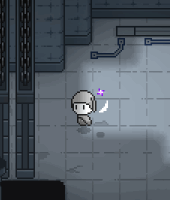
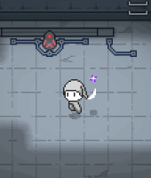
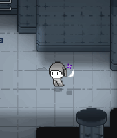

당신은 어두운 방에서 깨어난 요정입니다.
그리고 주변에는 무시무시한 괴물들이 돌아다니고 있습니다.
하지만 걱정마세요!
당신의 곁에는 믿음직스러운 동료 레오나르도 경이 함께하니까요.
  
다양한 무기들을 기억하고 소환해 괴물들과 맞서 싸우세요.
자유롭게 변경 가능한 룬을 통해 더욱 강해질 수 있습니다.
그리고 특별한 효과를 가진 숨겨진 룬도 존재합니다
프로스토리는 현재 개발중인 게임입니다.
아래에서 데모 버전을 다운받아 플레이하고, 여러분들의 의견을 전달해주세요!
추후 언젠가, 더 많은 무기와 의복, 다양한 캐릭터들이 등장하는 완성된 게임으로 찾아뵙겠습니다.